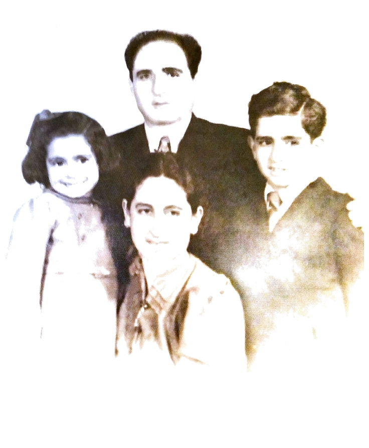

Pasión por lo que hacemos: escuchamos y asesoramos a cada quien para que salga satisfecho de su compra, desde la elección de sus necesidades, hasta la forma y medios de pagos que pueda utilizar.
Nuestro compromiso
Nuestra historia

Todo comienza en 1943, cuando nuestro antepasado Juan Cozza llegado desde Italia con su familia desde algún tiempo; se radica en la ciudad de Santa Fé. Dado sus conocimientos en la fabricación de plumeros, y que por aquella epoca eran escasos en la ciudad, rapidamente se dispone a la fabricación de estos, con el fin de proveer a negocios locales y vendedores ambulantes que llevarian su producto a otras localidades. Más tarde su hijo Francisco, continuó con la fabricación y además en 1987 inicia su primer comercio familiar en el garage de su casa, pasando a vender desde plumeros hasta variados artículos de limpieza de todo tipo y calidad; orientando su atención hacia clientes minoristas. Hoy día Casa Cozza, es un comercio que no solo mantiene los valores familiares y de nombre, si no que se adecua a las necesidades de las personas y de nuestro tiempo.